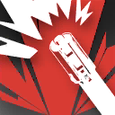

|
 |
战术推击 | Tactical Push 攻击动作
消耗 1 技力
 本回合结束
本回合结束 |
特种-推击手：你擅长将敌人拖拽至身边后进行攻击。
推击手（Push Stroker）是特种职业的其中一个职业分支。推击手是战场上的战术推动者，凭借液压拳套、压缩水炮或动能装置等仪器释放推力，操控敌我位置，将敌人与地形的控制权牢牢掌握。他们通过不同类型的装置或法术，将近中距离的敌人强行推开自己和队友的身边，或利用反冲实现瞬间位移，从而完成各种复杂的战术处理。推击手擅长以推力为核心达成控场的效果，为团队创造战术窗口。
在战斗中，推击手通常作为队伍中的中距离的控场力量，通过各种各样的推动战术来协助队友解决麻烦。
3级：战术推击 Tactical Push
作为一名推击手，你习得下述特性：
推动精通。你获得水炮的熟练和精通。当你持用水炮时，你可将其作为简易近战武器使用（1d8钝击伤害），且同样可以应用精通词条。
工程专家。你在执行魔法动作后，你可以立即用附赠动作使用武器发动一次攻击，或施展一个施法时间为动作的推击手戏法。
此外，你习得战技：战术推击。
|
 |
战术推击 | Tactical Push 攻击动作
消耗 1 技力
本回合结束 |
3级：力学直觉 Mechanics Intuition
你对推击装置的应用极为熟练，你习得下述特性：
液压推击。你习得并时刻准备戏法液压推击以及一环激流推手，其对你而言被视为推击手法术。你可以免费施展该法术而无需法术位，次数等同你的施法属性调整值。你在完成一次长休后恢复所有次数。
碰撞冲击。你以某效应成功将一个生物推开，并且其在被推动的过程中撞上墙体或其他生物，你可以让目标受到额外的1d8+你推击手等级的钝击伤害。
反向推动。若你以某效应试图推动一个被固定的物件，或者尝试推动一个因为体型过大而推动失败的目标，你可以改为将自己朝着反方向被推动等量的距离，且此移动不引发借机攻击。
6级：蓄势推击 Cluster Push
你对推击装置的应用出神入化，你习得下述特性：
趁势追击。当你推动一个生物时，你可以采取反应，立即朝着相同的方向移动至多等同你移动速度的距离，然后再发动一次武器攻击或施展一个施法时间为动作的推击手戏法，此移动不引发借机攻击。
此外，你习得战技：蓄势推击。
|
|
蓄势推击 | Cluster Push 施展法术
消耗 1 技力
立即 |
10级：连携打击 Chain Strike
你使用魔法动作施展一道推击手法术时，作为施法动作的一部分，你可以发动一次武器攻击或徒手打击。
15级：动量转移 Momentum Conversion
当你周围30尺内有可见生物在一次力量、体质或敏捷豁免中失败时，你可以立即对目标额外造成4d8+你推击手等级点你的精通伤害。
当你周围30尺内有可见生物要进行力量、体质或敏捷豁免时，你可以采取反应，迫使目标的豁免结果中必须减去你的施法属性调整值。